LLMs Under the HoodBarry S. StahlPrincipal Engineer - AZNerds.net@bsstahl@cognitiveinheritance.comhttps://CognitiveInheritance.com |

|
Favorite Physicists & Mathematicians
Favorite Physicists
Other notables: Stephen Hawking, Edwin Hubble, Leonard Susskind, Christiaan Huygens |
Favorite Mathematicians
Other notables: Daphne Koller, Grady Booch, Leonardo Fibonacci, Evelyn Berezin, Benoit Mandelbrot |
Fediverse Supporter
|

|
Some OSS Projects I Run
- Liquid Victor : Media tracking and aggregation [used to assemble this presentation]
- Prehensile Pony-Tail : A static site generator built in c#
- TestHelperExtensions : A set of extension methods helpful when building unit tests
- Conference Scheduler : A conference schedule optimizer
- IntentBot : A microservices framework for creating conversational bots on top of Bot Framework
- LiquidNun : Library of abstractions and implementations for loosely-coupled applications
- Toastmasters Agenda : A c# library and website for generating agenda's for Toastmasters meetings
- ProtoBuf Data Mapper : A c# library for mapping and transforming ProtoBuf messages
http://GiveCamp.org

Achievement Unlocked

Resume Scanning
|

|
Agenda
|

|
Evolution of Text Models

Keyword Search
|

|
Word2Vec
|
A neural network model that learned dense vector representations of words
|
RankBrain
|
Attention is all you need
|
BERT Integraton into Search
|
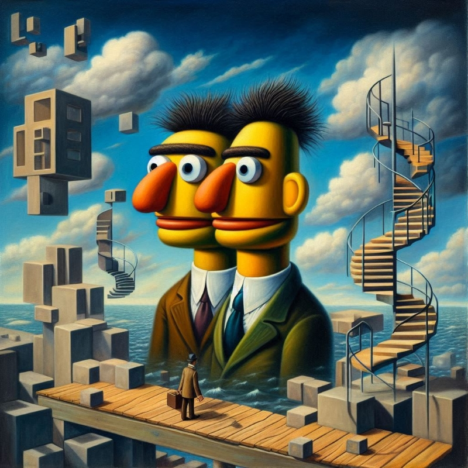 |
Transformer Architectures
|

|
Transformer (Simplified)
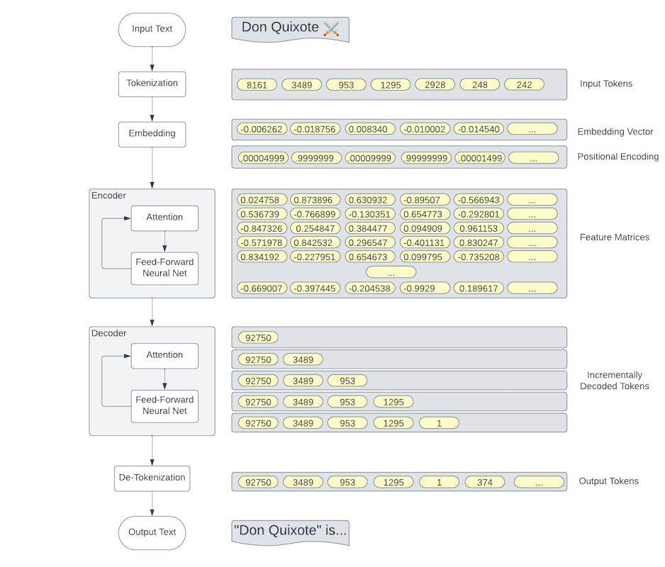Tokenization

GPT Tokenization
|
GPT-3 and beyond use the
|
Tokenization
|

|
Exploring Tokenization
|
Reference Implementation - AI Demos on GitHub
|
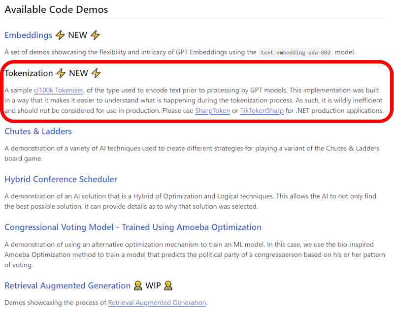 |
Demo
Tokenization
Embedding
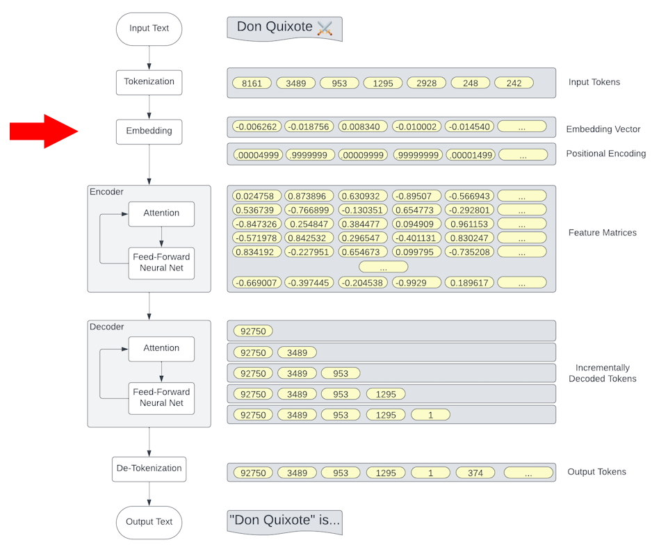Embeddings
|

|
Embedding Depth
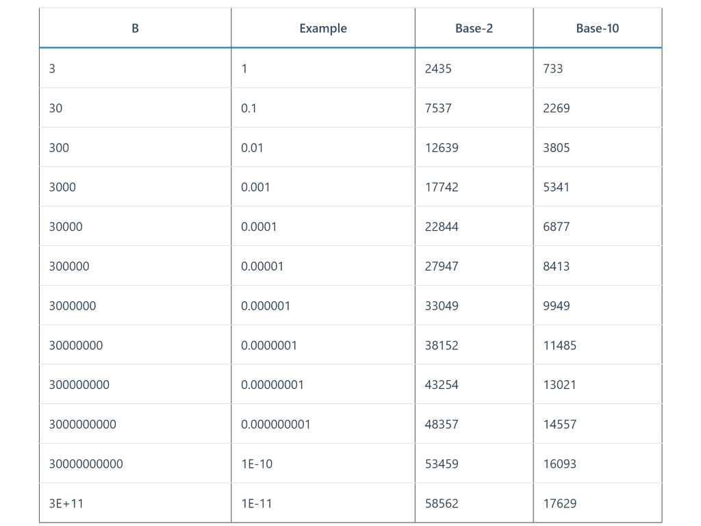3-D Space Projected into 2-D


Cosine Similarity & Distance
Note: For normalized vectors, cosine similarity is the same as the dot-product |
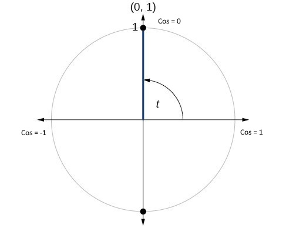 |
Cosine Distance

Cosine Distance

LM Studio
|
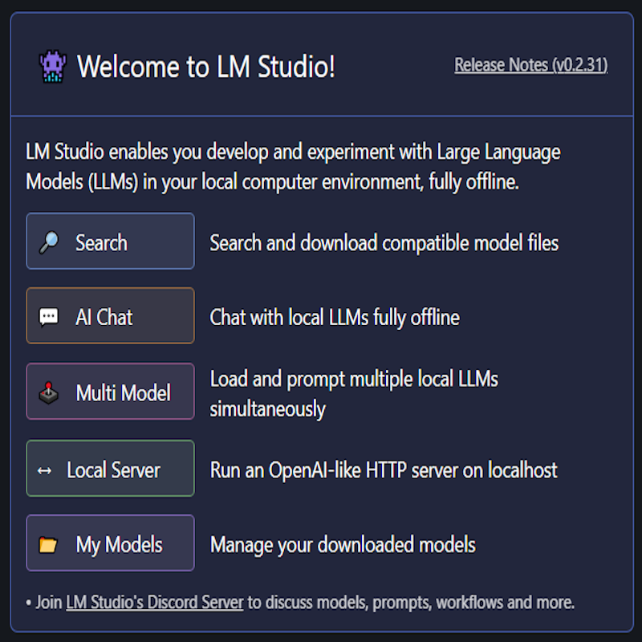 |
Embedding Services
|
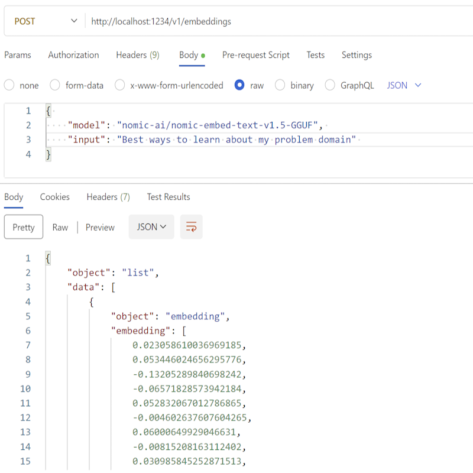 |
Setup LM Studio for Later Use
Step 1: Download LM Studio
- Download LMStudio from https://lmstudio.ai
- Launch it
Step 2: Install the Embedding Model
- Search for
nomic-embed-text-v1.5-GGUF - Download the one from
nomic-ai
- Search for
Step 3: Verify Installation
- Load the model from the local model list
- Validate the model works using Postman or Curl
curl http://localhost:1234/v1/embeddings \
-H "Content-Type: application/json" \
-d '{
"model": "nomic-embed-text-v1.5",
"input": ["This is a test sentence."]
}'
Embedding Distance
| Feature | Example |
|---|---|
| Synonym | "Happy" is closer to "Joyful" than to "Sad" |
| Language | "The Queen" is very close to "La Reina" |
| Idiom | "He kicked the bucket" is closer to "He died" than to "He kicked the ball" |
| Sarcasm | "Well, look who's on time" is closer to "Actually Late" than "Actually Early" |
| Homonym | "Bark" (dog sound) is closer to "Howl" than to "Bark" (tree layer) |
| Collocation | "Fast food" is closer to "Junk food" than to "Fast car" |
| Proverb | "The early bird catches the worm" is closer to "Success comes to those who prepare well and put in effort" than to "A bird in the hand is worth two in the bush" |
| Metaphor | "Time is money" is closer to "Don't waste your time" than to "Time flies" |
| Simile | "He is as brave as a lion" is closer to "He is very courageous" than to "He is a lion" |
Direct Usage of Embeddings
|
Classification
Grouping data into categories based on features of each item
- Can be used for:
- Grouping items with shared properties together
- Identifying which known group a new item belongs to
- Normalization of input/output
K-Means Clustering

Clustering
|

|
Normalization
Mapping user and system text to validated, known-safe representations to ensure consistent behavior and defend against prompt injection
- Input Normalization
- User input => known good request
- Prompt Sanitation
- Output Normalization
- Model output => known good response
- Disambiguating non-normalizable data
- Additional Context
- LLM request to user
Cow-mand Injection
|
Polarity Detection
Determines if the input is an affirmative or negative response to a question
- "I'm a canine lover" is an affirmative response to "Are dogs your favorite pets?"
- "Nobody does" is a negative response to "Do you like Javascript?"
Sentiment Analysis
Determines the emotional tone of a response
- "I love speaking at great conferences like this" => Enthusiasm
- "I had to miss so many great conferences due to covid" => Regret
Indirect Usage of Embeddings
|

|
Deep Neural Networks
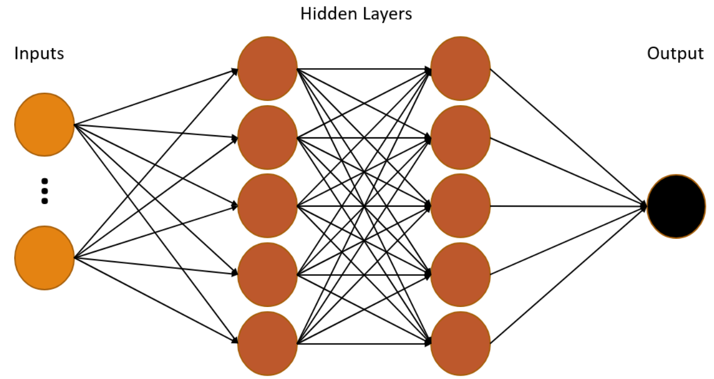Embeddings are Reversable
|

|
Any Questions on Tokenization or Embedding?
Attention Blocks
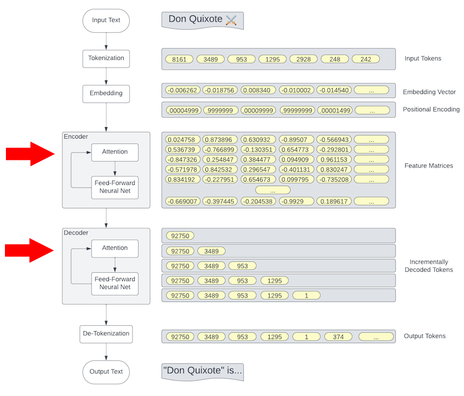"I'm getting PC ram"
|
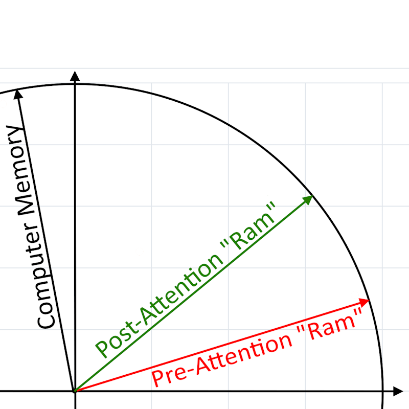 |
Matrix Multiplication 🔢
|
Positional Encoding

Attention Heads
|
The 3 matrices that are learned in training of the attention mechanism
Multiplying these matrices by the positionalized input adds the appropriate context to each token |
Transformer Blocks
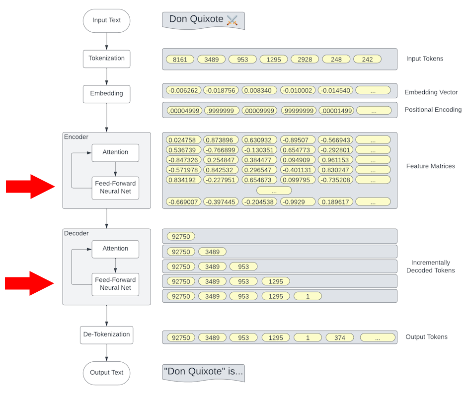Feature Layers
|
Embeddings Search
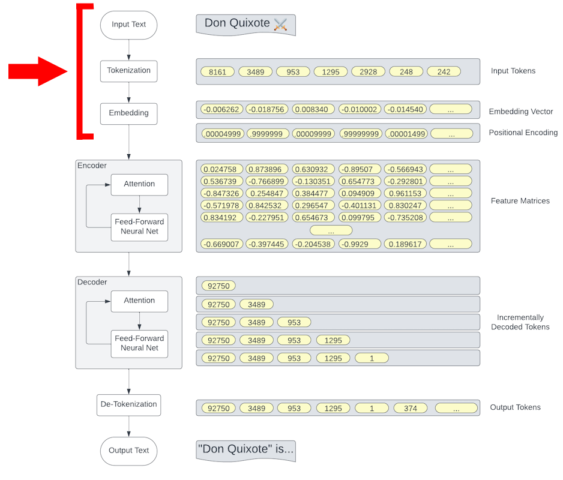Cosine Distances
|
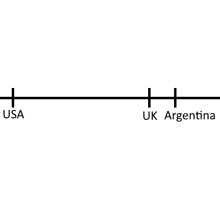 |
Embeddings Differences
|
Resume Clustering
|
|
Resume Summarization
System: As a resume scanner specializing in software engineers, focus solely on summarizing their key skills and experience durations, omitting demographics like age and location.
User: [Submits appropriate resume]
Assistant:
- Expertise in Java, J2EE, Spring Framework, Hibernate
- Experience with front-end technologies such as HTML, CSS, JavaScript, and AngularJS
- Proficient in SQL databases and ORM technologies
- Familiar with containerization and orchestration tools like Docker and Kubernetes
- Strong understanding of software design patterns and best practices
- Excellent problem-solving abilities and attention to detail
- Effective team player with strong communication skills
**Experience:**
- Senior Java Developer at XYZ Tech Solutions (June 2016 – Present, 5 years)
- Java Software Engineer at Innovative Software Co. (May 2012 – May 2016, 4 years)
**Certifications:**
- Oracle Certified Professional, Java SE 8 Programmer
- Certified ScrumMaster (CSM)
**Education:**
- Bachelor of Science in Computer Science, University of Technical Excellence (Graduated: May 2012)
What can we actually do with these tools?
Operational Architecture
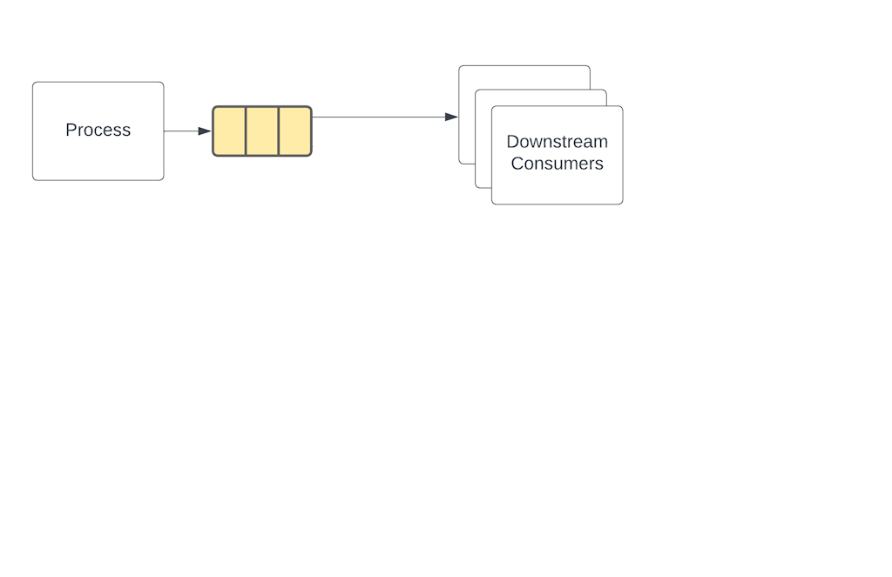Operational Architecture

Vector Databases
|

|
KD-Tree
|
Knowledge Graph
|
Vector Search
|
Retrieval Augmented Generation (RAG)
|
GraphRAG
|
RAG via MCP
|
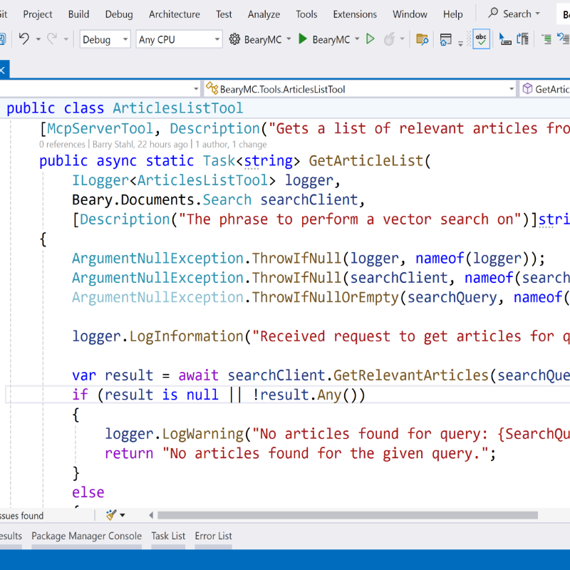 |
Beary - The Beary Barry Bot

Beary Flow

Beary Embeddings Json Snippet
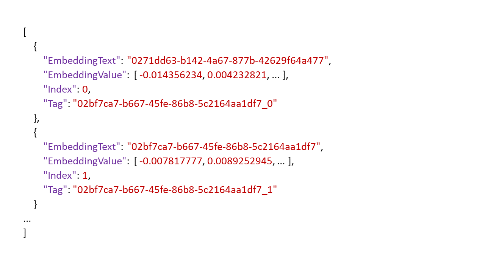AskBeary Demo
No More Search Engines

We now use Information Recommendation Engines
More than Info Presenters
Our applications must be Information Radiators
More than just a query
|

|
Contextual Clues
|

|
Meet Bentley
|
Operations Manager Role
|
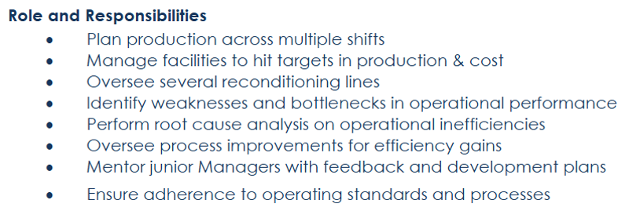 |
Additional Information
|
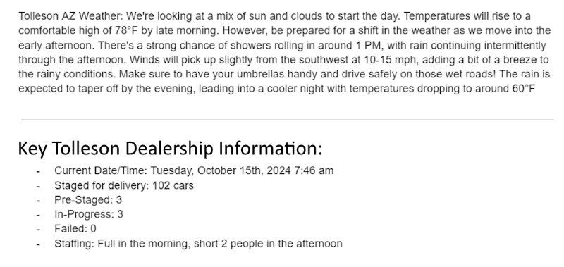 |
Prompts
|
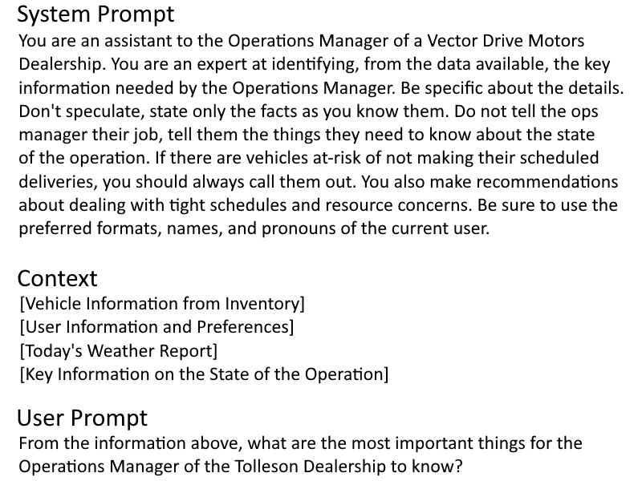 |
Yo Dawg!
|
What Context is Important?
Consider carefully what context matters to your users
Challenge: Think Outside the App
How can we leverage these tools to create amazing experiences for our users?
- Move Beyond Tables and Chat Boxes
- Explore unconventional formats for information
- Understand the user's goals
- Design interactions that guide them to solutions
- Example: CoPilot Suggestions
Limitations of Attention
|
Ethical Concerns
|
Model Creation Concerns
|

|
The model is biased
|

|
Model Answers May Be
|

|
Model Privacy Concerns
|
Accountability & Transparency
|
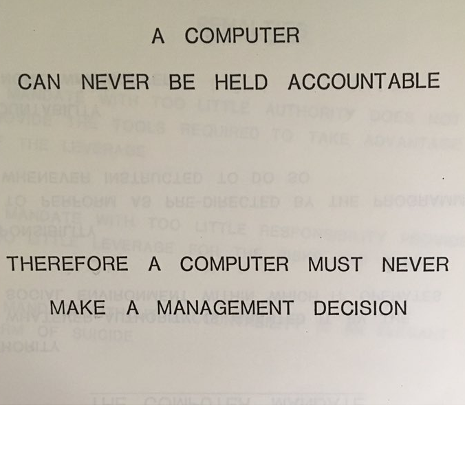 |
Safe Chatbot Interactions
|

|
When Should AI be Used?
|
Resources
Exercises
- Setup LMStudio or other local environment
- Get Embeddings using
curlorPostman - Compare Embeddings using Cosine Distance
- Explore Mathematical Operations on Embeddings
- Add Embeddings to a Vector DB
- Add Facts to a Graph DB
- Retrieve Embeddings/Facts via KNN
Discriminative vs Generative
|
Softmax Activation Function
|
ReLU Activation Function
|